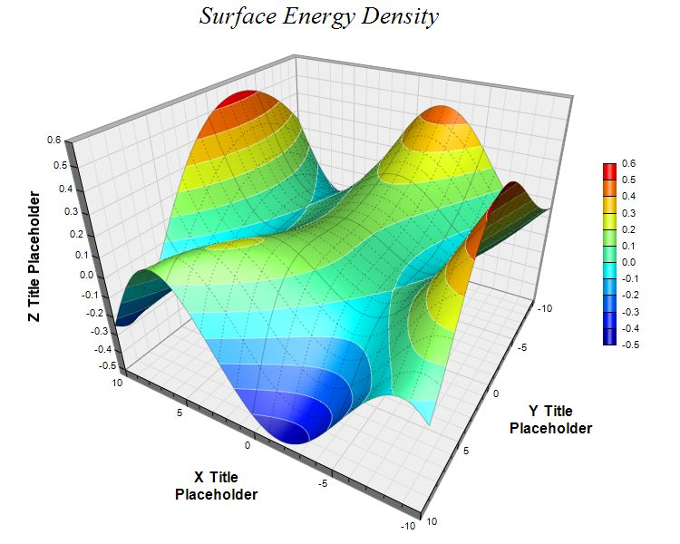

This example demonstrates using deep perspective. It also demonstrates surface grid lines of different line styles.
The following is the command line version of the code in "cppdemo/surface3". The MFC version of the code is in "mfcdemo/mfcdemo". The Qt Widgets version of the code is in "qtdemo/qtdemo". The QML/Qt Quick version of the code is in "qmldemo/qmldemo".
#include "chartdir.h"
#include <math.h>
int main(int argc, char *argv[])
{
// The x and y coordinates of the grid
double dataX[] = {-10, -9, -8, -7, -6, -5, -4, -3, -2, -1, 0, 1, 2, 3, 4, 5, 6, 7, 8, 9, 10};
const int dataX_size = (int)(sizeof(dataX)/sizeof(*dataX));
double dataY[] = {-10, -9, -8, -7, -6, -5, -4, -3, -2, -1, 0, 1, 2, 3, 4, 5, 6, 7, 8, 9, 10};
const int dataY_size = (int)(sizeof(dataY)/sizeof(*dataY));
// The values at the grid points. In this example, we will compute the values using the formula
// z = Sin(x * x / 128 - y * y / 256 + 3) * Cos(x / 4 + 1 - Exp(y / 8))
const int dataZ_size = dataX_size * dataY_size;
double dataZ[dataZ_size];
for(int yIndex = 0; yIndex < dataY_size; ++yIndex) {
double y = dataY[yIndex];
for(int xIndex = 0; xIndex < dataX_size; ++xIndex) {
double x = dataX[xIndex];
dataZ[yIndex * dataX_size + xIndex] = sin(x * x / 128.0 - y * y / 256.0 + 3) * cos(x /
4.0 + 1 - exp(y / 8.0));
}
}
// Create a SurfaceChart object of size 750 x 600 pixels
SurfaceChart* c = new SurfaceChart(750, 600);
// Add a title to the chart using 20 points Times New Roman Italic font
c->addTitle("Surface Energy Density ", "Times New Roman Italic", 20);
// Set the center of the plot region at (380, 260), and set width x depth x height to 360 x 360
// x 270 pixels
c->setPlotRegion(380, 260, 360, 360, 270);
// Set the elevation and rotation angles to 30 and 210 degrees
c->setViewAngle(30, 210);
// Set the perspective level to 60
c->setPerspective(60);
// Set the data to use to plot the chart
c->setData(DoubleArray(dataX, dataX_size), DoubleArray(dataY, dataY_size), DoubleArray(dataZ,
dataZ_size));
// Spline interpolate data to a 80 x 80 grid for a smooth surface
c->setInterpolation(80, 80);
// Use semi-transparent black (c0000000) for x and y major surface grid lines. Use dotted style
// for x and y minor surface grid lines.
int majorGridColor = 0xc0000000;
int minorGridColor = c->dashLineColor(majorGridColor, Chart::DotLine);
c->setSurfaceAxisGrid(majorGridColor, majorGridColor, minorGridColor, minorGridColor);
// Set contour lines to semi-transparent white (80ffffff)
c->setContourColor(0x80ffffff);
// Add a color axis (the legend) in which the left center is anchored at (665, 280). Set the
// length to 200 pixels and the labels on the right side.
c->setColorAxis(665, 280, Chart::Left, 200, Chart::Right);
// Set the x, y and z axis titles using 12 points Arial Bold font
c->xAxis()->setTitle("X Title\nPlaceholder", "Arial Bold", 12);
c->yAxis()->setTitle("Y Title\nPlaceholder", "Arial Bold", 12);
c->zAxis()->setTitle("Z Title Placeholder", "Arial Bold", 12);
// Output the chart
c->makeChart("surface3.jpg");
//free up resources
delete c;
return 0;
}
© 2023 Advanced Software Engineering Limited. All rights reserved.